Locação de ferramentas
Betoneira, compactador de solo, placa vibratória, andaime, escora metálica, furadeira, martelete, serra mármore e cortadora de piso.
Ver catálogo →Construindo o futuro com dedicação e trabalho.
Reunimos a Itasul Locações, com locação de equipamentos para construção civil e movimentação, e a MAP Reciclagem, com central de transbordo e triagem de resíduos e mudas frutíferas.
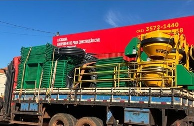
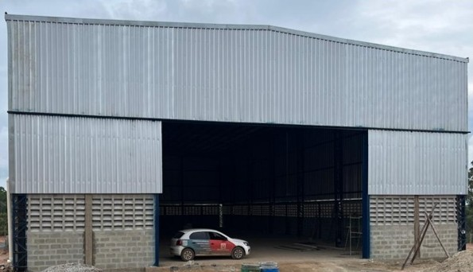
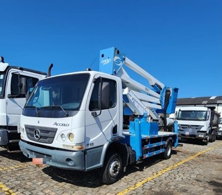
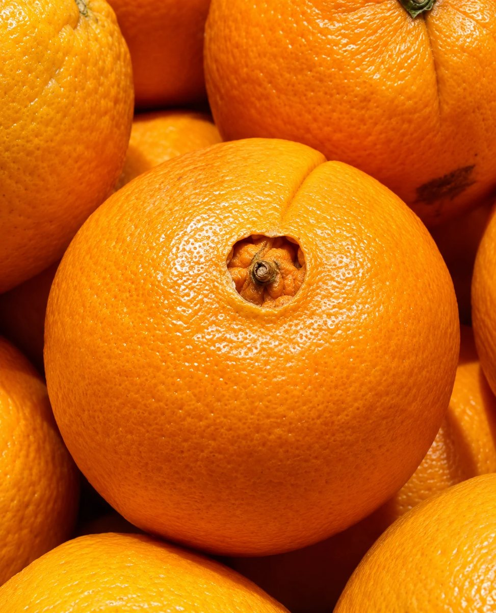
O Grupo Itasul iniciou suas atividades em 22 de agosto de 2012, com a empresa Itau Locações e Serviço Ltda. Hoje reúne duas empresas: a Itasul Locações, com locação de equipamentos para construção civil e movimentação, e a MAP Reciclagem, com soluções ambientais responsáveis e gerenciamento de resíduos.
Atuamos com foco nas necessidades dos nossos clientes, da população e do meio ambiente.
Oferecer soluções completas em locação de equipamentos para construção civil e movimentação, e em gerenciamento de resíduos, com eficiência, segurança e responsabilidade ambiental, contribuindo para operações mais sustentáveis e produtivas dos nossos clientes e para a comunidade.
Ser referência regional em locação de equipamentos para construção civil e movimentação e em gestão de resíduos, reconhecidos pela inovação, confiabilidade e compromisso com a sustentabilidade, ampliando continuamente a nossa capacidade de gerar valor para clientes, comunidade e meio ambiente.
Equipamentos para construção civil e movimentação.
Betoneira, compactador de solo, placa vibratória, andaime, escora metálica, furadeira, martelete, serra mármore e cortadora de piso.
Ver catálogo →Caçambas estacionárias para retirada de entulho, com entrega e recolhimento pontuais e destinação ambientalmente correta.
Ver detalhes →Içamento, carga, descarga e movimentação de materiais pesados, com operadores experientes e total segurança.
Ver detalhes →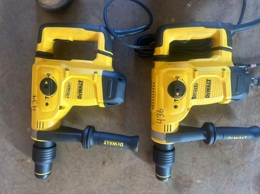
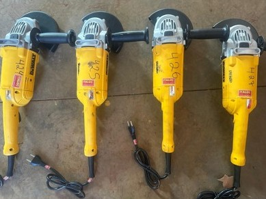
Caminhão Munck
Carga, descarga e movimentação de materiais pesados, com operadores experientes e planejamento de cada serviço.
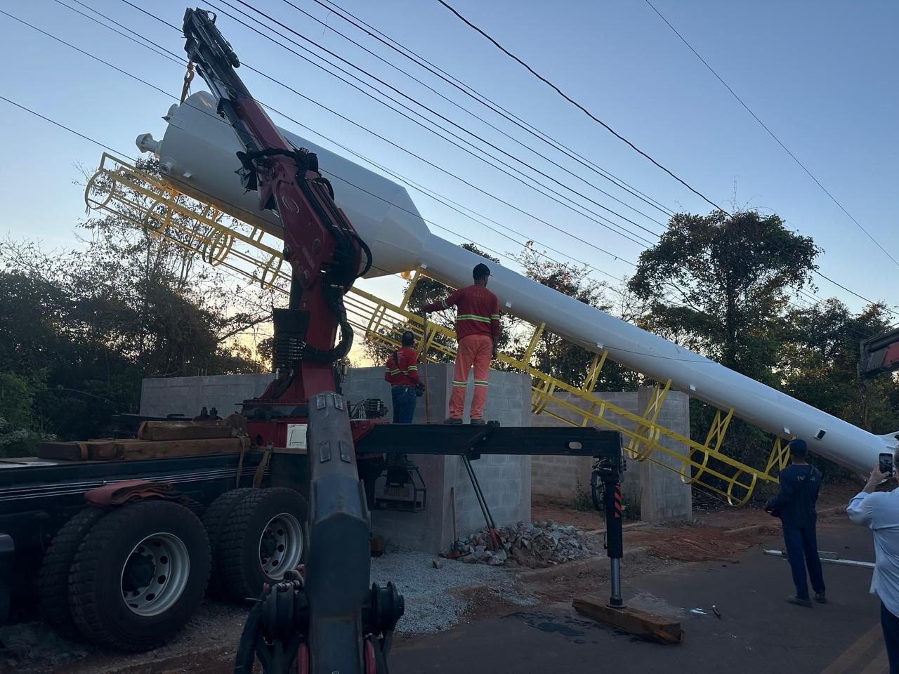
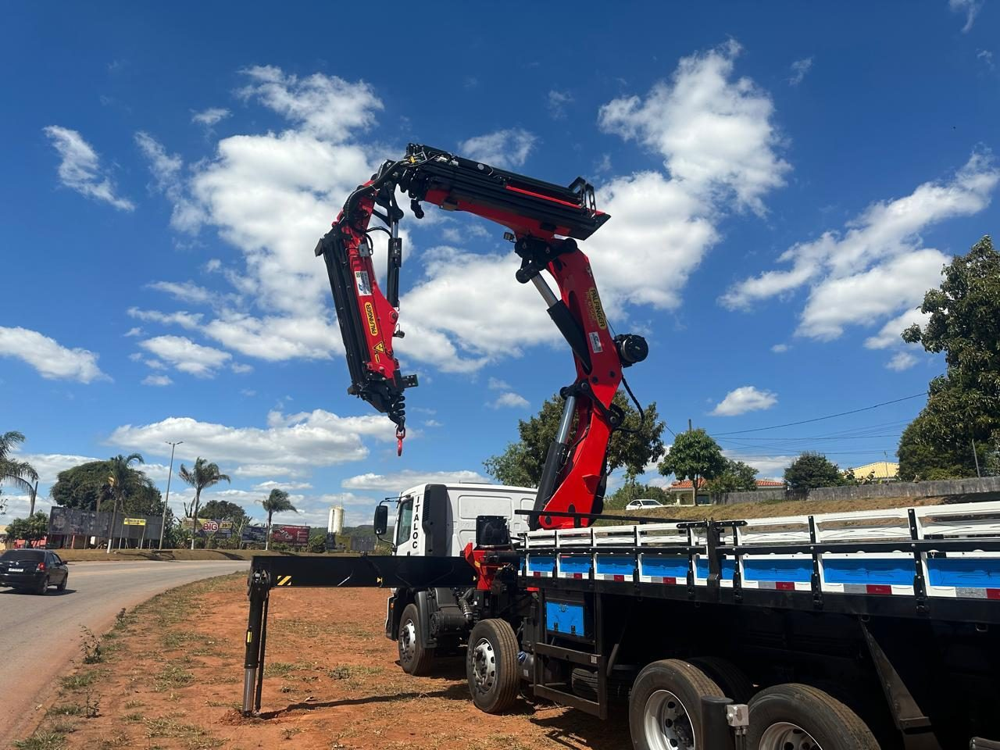
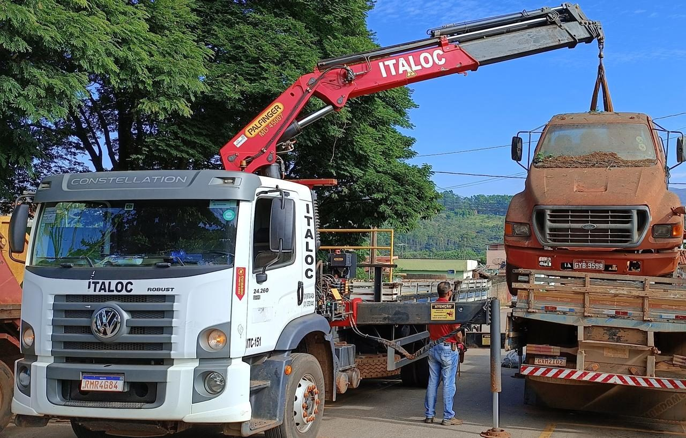
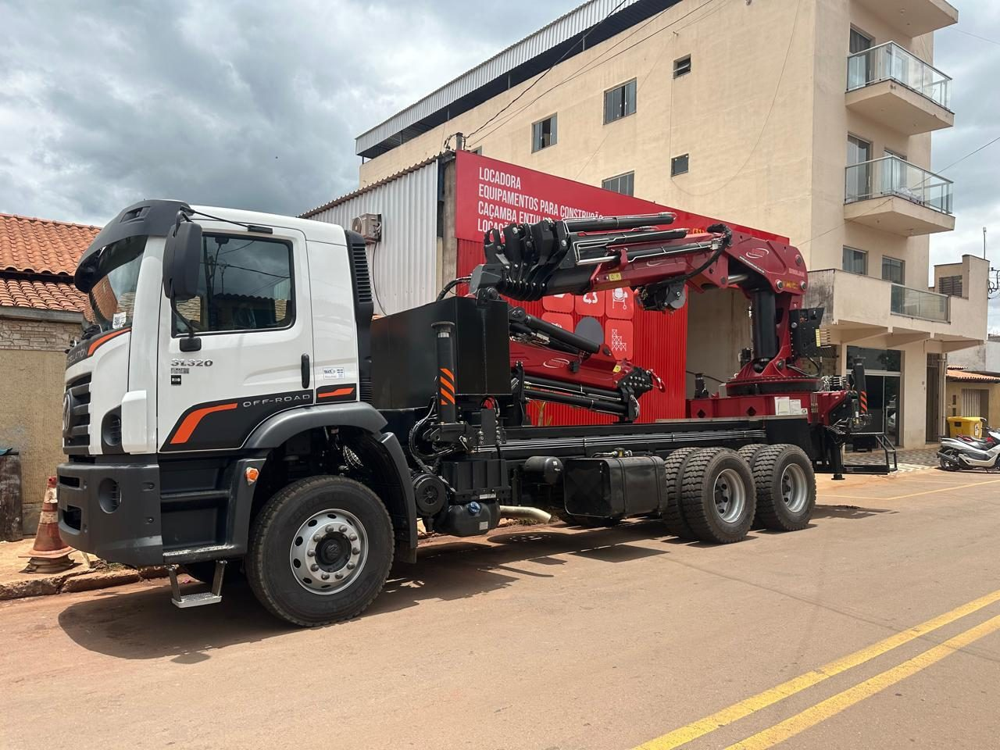
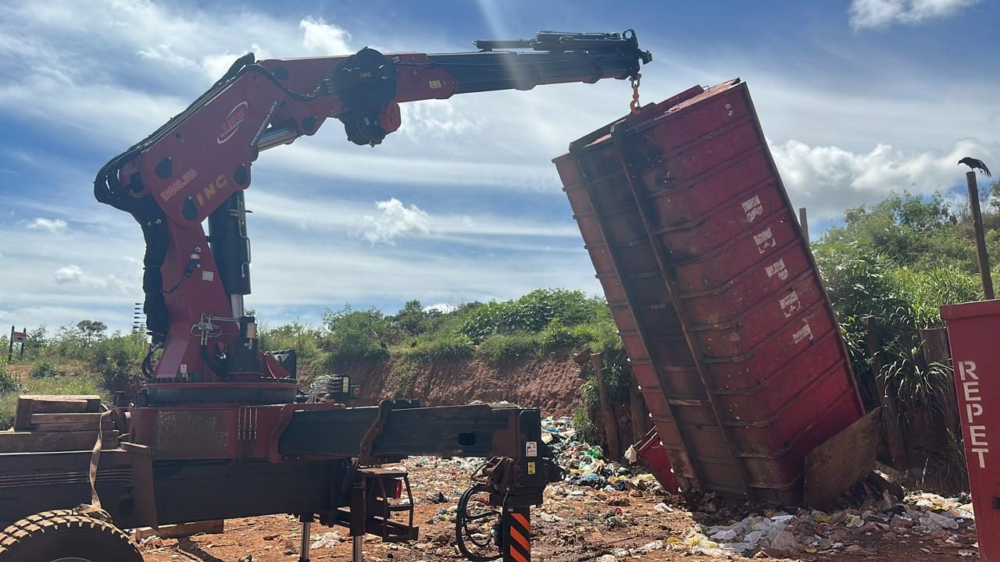
Alguns dos equipamentos que a Itasul Locações tem para locação. O catálogo completo, com descrição e usos, está no site.
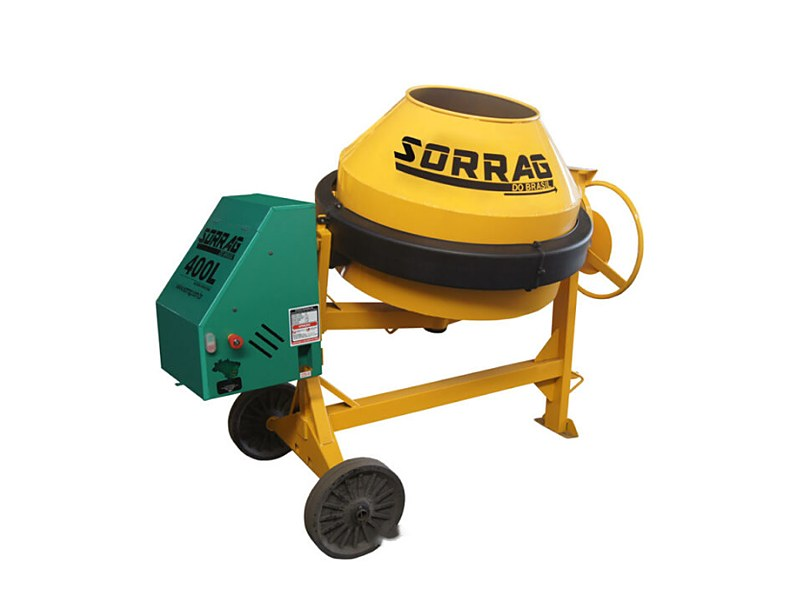
ConcretagemBetoneira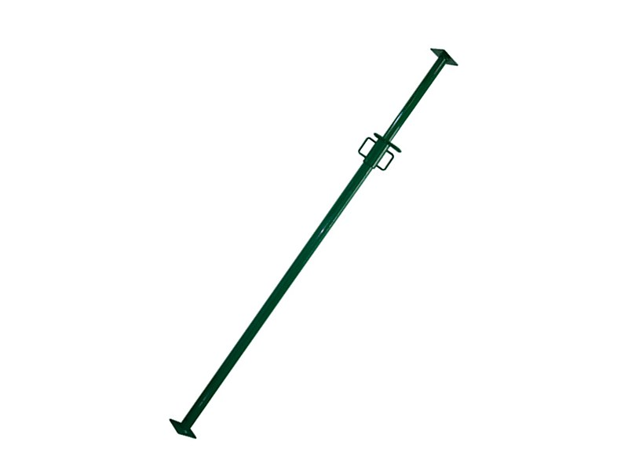
ConcretagemEscora metálica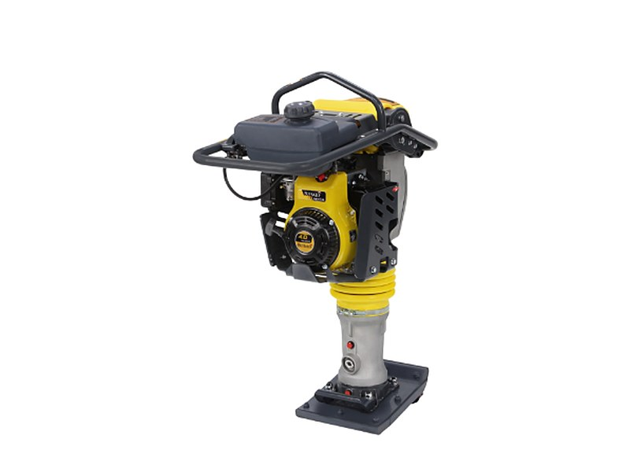
CompactaçãoCompactador de solo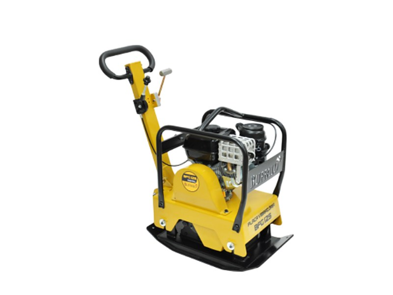
CompactaçãoPlaca vibratória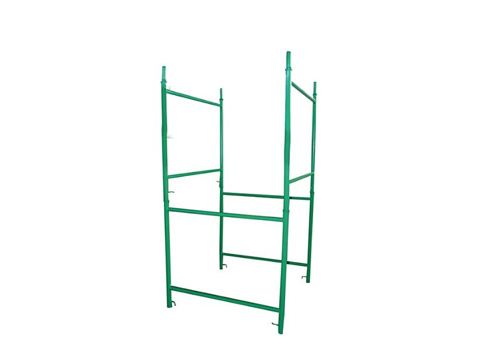
Acesso e alturaAndaime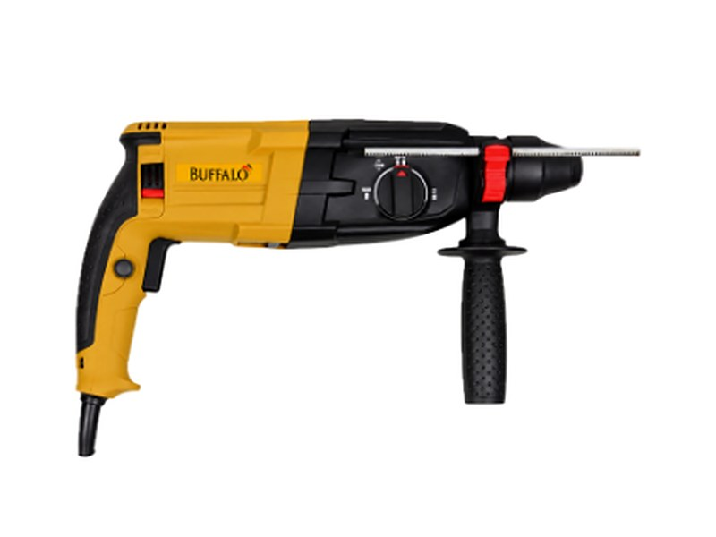
Perfuração e demoliçãoFuradeira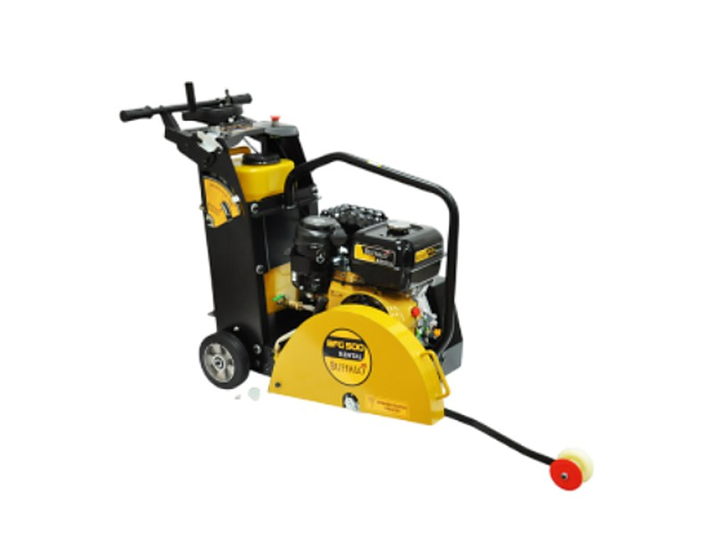
CorteCortadora de piso Catálogo completo Veja todas as ferramentas →Veja as ferramentas, a caçamba ou o Munck de que a sua obra precisa.
Chame no WhatsApp e informe o serviço, o endereço e o período.
Entregamos na sua obra ou você retira na nossa loja.
Terminou o serviço? Devolva ou agende o recolhimento com a gente.
Soluções ambientais responsáveis.
A MAP Reciclagem opera uma central de transbordo e triagem de resíduos, com pátio, balança rodoviária de até 100 toneladas e galpão.
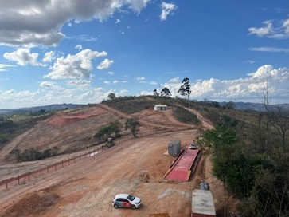
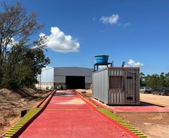
A central está em expansão, com uma planta de beneficiamento de RCC (resíduos da construção civil) em construção.
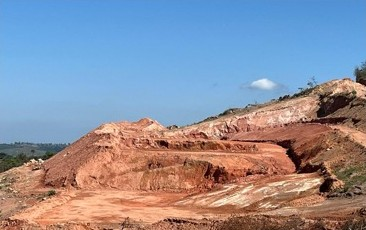
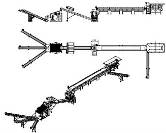
Cada muda tem identificação botânica, características, orientações de irrigação e desenvolvimento esperado, e um guia de cultivo.
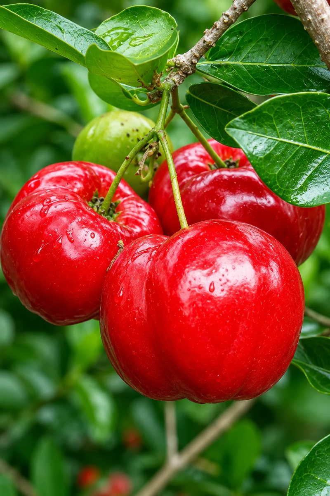
Malpighia emarginataAcerola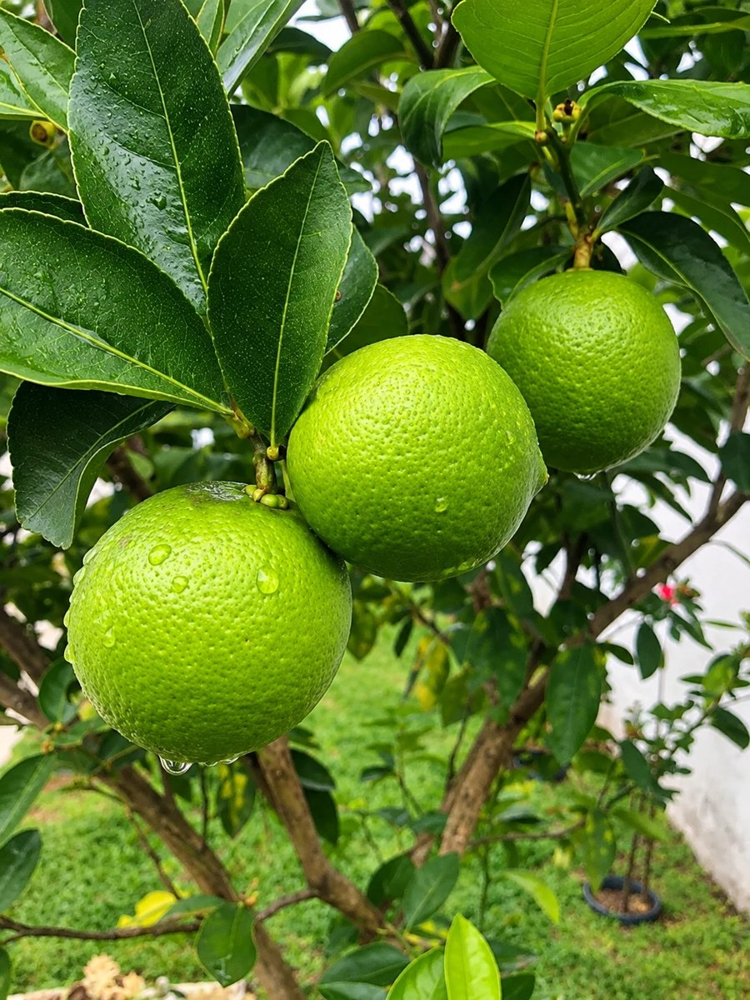
Citrus latifoliaLimão TahitiFale com o Grupo Itasul e conte o que você precisa: locação de equipamentos, caçambas, caminhão Munck, soluções para resíduos ou mudas.
Grupo Itasul · Itasul Locações · MAP Reciclagem
Construindo o futuro com dedicação e trabalho.